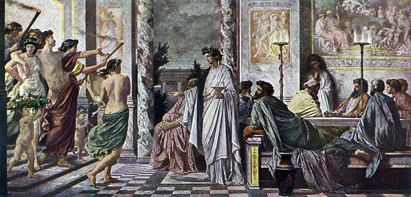
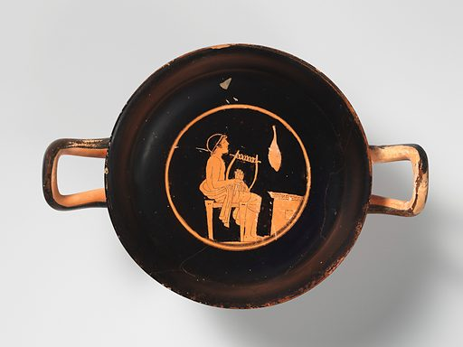

Plato and the Ancient Politics of Wine
Part A. The Philosopher’s Drunken Vision
Introduction
In this piece I discuss Plato’s description of Socrates’ philosophical inspiration as “drunkenness” and/or Dionysian mania; Plato’s metaphor draws on earlier Greek poetry, including Euripides and his popular play The Bacchants, where Dionysus is praised as the inventor of “liquid drink of the grape” (line 279).
Importantly, Plato also draws on Solon, the famous lawgiver and poet of archaic Athens, who discussed extensively the drinking etiquette of ancient communities as a reflection of their civic character. Yet, the application of this metaphor on Socrates and his philosophical genius was fraught with difficulties since Socrates, known for conversing with the so-called daimonion, the inner voice or sign that guided him, and frequently undergoing trances in public, could be easily misunderstood as a common drunkard or even a madman — especially since wine abuse was also believed to cause madness.

To avoid the risk of contributing to the misperceptions of the Athenians about Socrates, Plato insisted that Socratic ecstasy is utterly sober (even though it can involve wine-drinking and may occur in a sympotic context). Drunkenness is a culturally embedded comparison that allowed Plato to articulate the mind-altering abilities of philosophy while offering a concrete example of how to prepare ourselves for that kind of philosophical revelation. Furthermore, Plato defends the valuable contribution of “drunken” or inspired philosophers and their insights to the city.
Socrates in the Entourage of Dionysus
In the Symposium, a dialogue mostly known for Socrates’ famous exchange with Diotima, a priestess from Mantineia, who instructs him in the doctrine of Eros, Plato also offers a very provocative representation of Socrates’ philosophical reverie which is often overlooked as merely amusing.
Socrates, we are told, looks like the Satyrs (215b1 and 221d6-e1), the ever-drunk, lusty followers of Dionysus, typically portrayed in ancient art as bald, with a snub nose, thick lips and big, bulging eyes. This resemblance, also confirmed by Xenophon (in his own Symposium), is unanimously projected on ancient representations of Socrates. Plato also speaks of Socrates’ similarity to Marsyas (215b5-6), the legendary satyr from Phrygia who invented the flute and served in the entourage of Dionysus as well. Like Marsyas enthused his audiences with his otherworldly music, leading them to ecstasy, so Socrates makes those who listen to his speeches shudder and weep and become frantic (215e1-2 and 218b).
Plato emphatically states that Socrates’ audiences experience trances just like those who dance in the Corybantic rites. Socrates’ ability as a drinker is also emphasized in two other places in the dialogue: when at the start of the gathering, Pausanias the sophist seeks everyone’s consent to adopt a moderate way of drinking since they all still nurtured a hangover from the excesses of the previous night, he specifically excludes Socrates from the agreement because of his extraordinary ability to consume large quantities of wine (176a-c).
Later in the dialogue, a drunken Alcibiades gate-crashes the dinner party and offers his own praise of Socrates, including a mention of his ability to quaff as much wine as one bids him to without getting drunk (214a-b). This important detail seems to make all the difference in how we ought to approach Plato’s description of Socrates’ delirium as drunkenness.
In fact, a careful reading of the Symposium reveals that Plato’s comparison of Socrates with the Satyrs relies exactly on the discrepancy between appearances and essence: like the funny-looking statues of Satyrs and Silens, sold in craft shops all around the ancient marketplace at Athens, contained images of gods when opened inside, so Socrates’ unassuming words contained life-altering truths. Similarly, like the thorough discipline entailed in Marsyas’ seemingly carefree existence, Socrates’ random arguments were the result of systematic cross-examination (known as elenchos). Thus, offering an enactment of the popular phrase “there is truth in wine,” Plato has Alcibiades praise Socrates for being “full of sophrosynē” (216d5-7) and “the most sober man he has ever met” (219d), before adding that, despite drinking liberally, “no-one has ever seen Socrates physically drunk” (220a5-7).
Image by Ales Maze on Unsplash.
Dionysian Mania and the Philosopher
References to drunkenness are also present in Plato’s Phaedrus, where Socrates explains the symptoms of philosophical mania which, in his view, is the greatest of all types of mania that the ancient Greeks recognized as beneficial.
Hence, next to the prophetic mania (associated with Apollo), the telestic (associated with Dionysus), and the poetic (inspired by the Muses), Plato added erotic frenzy (inspired by Aphrodite and Eros) which can inspire exceptional lovers to devote themselves to the pursuit of wisdom, to become, that is, “lovers of wisdom” (philosophers).
Explicit mentions of drunkenness in the Phaedrus carry negative connotations; physical drunkenness, therefore, features as a distraction for lovers who risk deviating from philosophy and as a symptom of the soul’s yielding to excess (hubris), the opposite of sophrosynē.
But, as in the Symposium, Plato employs a metaphorical appreciation of drunkenness to describe the frenzy experienced by the lover when he is still trying to make sense of the mental and emotional turmoil that precedes philosophical revelation. To start with, his frenzy is instigated by the sight of his beloved and his earthly beauty until it can be gradually replaced with desire for wisdom and the heavenly origin of things. In this context, Socrates presents the lover as a follower of Dionysus, a Bacchant (253a8-9). He also refers to the initiation of the lovers of beauty to higher mysteries as orgia in Phaedrus 250c1-2, evoking thus Euripides’ typical description of the rites in honour of Dionysus in The Bacchants.
Plato has Socrates explain early in the Phaedrus the association of mania with purification rites and prophecy, a notion repeatedly advocated in the Bacchae, where the worshippers of Dionysus perform purifying rites up in the mountains, and where the prophetic powers inspired by the god are praised (lines 298-309).
Moreover, through their frenzied rites, Euripides’ Bacchants experience a “change of consciousness” (lines 1266, 1270), like the lover who is reminded of the eternal vision of Beauty through the physical charms of the beloved in the Phaedrus (251a9-10). This change is manifest in the enhanced senses of the Bacchants and includes acquiring a sharper sight; hence, in Bacchae 1267, the leader of the Bacchants is described as seeing a brighter, more translucent sky, while in the Phaedrus, Socrates claims that sight instigates our memory of the eternal truths more than any other sense (250d6-8).
Euripides describes the Bacchants as stung by divine frenzy, using the verbs oistreō and mainomai and their respective nouns oistros and mania (lines 32-33; 119; 664-665; 979; 999; 1093-1094; 1229; 1295), just like the stinging sensation that the soul of the lover feels in all its parts in the Phaedrus (251d7-8). Importantly, according to Euripides, Dionysus who can be “poured as wine for the other gods to enjoy” (Bacch. 284), liberates the souls/minds of the drinkers, who thus achieve a form of sublimity.
Plato’s description of the lover’s symptoms in terms that recall the Dionysian cult as detailed in Euripides’ Bacchants, seems to tap into a crucial distinction about genuine ecstasy: here, we must need to remember that in Euripides, the king of Thebes refused to recognize the divinity of Dionysus and accused his followers of using the god’s rites as a pretext for undermining the laws of the city, for being drunk (lines 260-262), and for behaving disorderly. Euripides, however, refutes the king’s misperception by having a messenger report that he witnessed the Bacchants behaving in a respectable manner, totally in line with their status as citizen wives (lines 686-687). As the play develops, it becomes clear that the young king of Thebes is more preoccupied with exercising power than engaging with the needs of his citizens; the king is “drunk” with the license of power and thus, unable to exercise his judgement in the sober manner that befits his office.
That Plato has in mind a debate about the authenticity of out-of-body experiences is confirmed in another important dialogue, the Phaedo, where he famously claimed that although “many get to hold the thyrsus” during the mysteries, the real Bacchuses, that is, the real mystics, are only few (69c9-10).
Your ad-blocker ate the form? Just click here to subscribe!
The Civic Context of Wine Drinking
As mentioned, Euripides’ Bacchants comments on the handling of political power and on the need of the community to share mystical experiences. In the Bacchants, Dionysus demands worship from every member of the community (line 208) and insists that the city must be initiated into his mysteries (39-40).
However, while Euripides contrasts the stark isolation of the tyrant with the solidarity of the Bacchic group, Plato questions the social shunning of the aloof philosopher by the demos who have no appreciation of philosophical reflection. In this context, the philosopher may look drunk in his trance, yet his insight is sober and clear.
The political connotations of wine drinking and its sympotic context, however, first emerged during the archaic period (700-480 BCE). This was a time of “political fermentation,” when early cities sought to establish their internal networking systems and negotiate their civic character; as this process unfolded, especially in the affluent societies of the Aegean islands, private symposia offered an important, even if informal, forum for sealing political alliances and no doubt, for airing disagreements among the various social factions. The verses of Alcaeus, blasting his opponents (frs. 72, 332, 348 Lobel-Page) or lamenting his civic situation (fr. 70, 130 Lobel-Page), immediately come to mind. Archilochus’ iambics (fr. 124b West/LCL 259) and several examples from the Theognidean corpus (31-34, 971-972, 981-982 etc) also reflect a sixth century BCE sympotic culture revolving around local socio-political intrigues but also, around the qualities of community leaders. In this environment, wine drinking as an essential part of the symposion etiquette provided an unexpected, yet effective testing ground for performing a man’s ethos.

Anselm Feuerbach (1829–1880), Plato’s Symposium. (Source: Wikipedia)
Thus, despite the strong urge to drink copiously, often reiterated in archaic poetry (as in Alcaeus fr. 346), losing control because of drunkenness was regarded as a sign of ignoble, unsophisticated character. According to Hipponax (fr. 67 West), “those who drink wine have few wits about them,” a sentiment echoed by Theognis (lines 497-498), who observes that “the mind of the foolish and sensible man alike is made light-headed, whenever he drinks beyond his limit.”
To avoid such embarrassment in front of one’s fellow-citizens several poets prescribe moderation. According to Theognis (line 478), the preferred condition for a drinker is to be “neither sober nor too drunk;” it is worth citing the poem in its entirety as it perfectly encapsulates the ethical concerns that informed the drinking culture of the day:
In this context, moderate drinking was presented as the characteristic of the refined upper social classes, while uncouth foreigners and those belonging to the lower social strata were portrayed as habitually engaging in excessive drinking. The two emerging models of drinking, of course, make a statement about the moral substance of their advocates. In this context, “noble” men ought to be able to harness the dangerous aspects of wine drinking and employ them just enough so that they could benefit from the wine’s liberating and inspiring effects without risking social ridicule.
The archaic drinking etiquette (with its Homeric overtones) became entrenched in the minds of subsequent generations, especially given the reputation of Solon as a poet and a champion of the Athenian demos.
Solon had used drinking habits to discuss civic aretē and advocate moderation since already the middle comedy poet Alexis had portrayed him as discussing symposiastic topoi (PCG 9); Solon defends the “Greek way” of drinking mixed wine, a practice adopted at the Athenian symposia as an obvious marker of discern between the Greek and the barbaric custom of drinking unmixed wine.
The motif was also likely implied in some Solonian verses cited by Demosthenes in his On the Embassy (19.254-256), although no explicit reference to drunkenness survives in the badly damaged at this point text. Here, the speaker chooses to cite Solon’s elegiac verses that refer to a city plagued by subservience to money and injustice; among the many symptoms that manifest the citizens’ erroneous judgement and moral malaise is that (poem 4, lines 9-10) “they do not know how to restrain excess or to conduct in an orderly and peaceful manner the festivities of the banquet that are at hand…”.
Solon’s emphasis on the orderly dinner/symposion which mirrors the order of relations between people in society, explains why Plato in the fourth century BCE appreciates the symposion as the ideal setting for negotiating virtue. Plato, who refers to Solon by name in the Symposium (209d7), reiterates the latter’s focus on the virtue of the individual as a major prerequisite of political robustness. In his generation, Plato employed Solon’s notion of nobility to tackle the challenge of the sophists who sought to undermine the division between the noble by birth (agathoi/esthloi) and those who could afford excellence (aretē) through education. While the sophists promised that the ability to craft clever arguments could improve someone’s life, Plato remains doubtful that arguments alone, without a solid moral basis, can be beneficial. To this direction, Socrates’ modesty is a loud example of how someone who steers away from florid arguments and insists on speaking in his own words (see Symposium 201d10-11; cf. Protagoras 347 c3-348 a6) can cause such a dramatic and meaningful change to his audiences.
Thus, we can appreciate how Plato’s discussion of drunkenness can reflect the debate about truth-like and true (in the sense that they are morally sound) arguments, as well as quasi-genuine and real inspiration. Unsurprisingly, in the Symposium the more the speakers rely on beautiful, poetic words of others, the more inaccurate their accounts are, and the less able they are to handle wine.

Ancient Greek drinking cup. (Source: Wikipedia)
However, apart from defending Socrates’ (allegedly) straightforward, truthful arguments and their moral basis, Plato is also keen to promote the rehabilitation of the philosopher in the city. If the arguments of the sophists can improve the fortunes of individuals, the sober insight of the philosopher is beneficial for the whole city. As a real Bacchant, Socrates (and those inclined to join him) in his trance performs the necessary checks and balances on behalf of the city. This is the so-called theōria (seeing/witnessing) that corresponds to the first stage of mystic initiation: like the ancient initiands reportedly witnessed a number of divine visions before completing their initiation, so in the Phaedrus the lover witnesses sacred visions as he becomes privy to the mysteries of wisdom, as he completes his transformation to a philosopher. In Phaedrus 247c4-e7 the moment that the mind perceives or “sees” eternal truth is described as follows:
The political context of theōria is also supported by Solon who according to tradition decided to travel far and wide after delivering his laws for the Athenians; both Herodotus (1.29-30) and the pseudo-Aristotelian Constitution of the Athenians (11.1) refer to Solon’s travels as theōria. Notably, Solon’s pilgrimage to other places does not only allow him to witness other customs and constitutions but effectively removes him from the city. Solon’s absence, like the recurrent, meditative withdrawal of the philosopher from society, is an attempt to preserve that moment of illumination unspoiled, to allow the city to achieve its telos.
Thus, in using drunkenness as a metaphor, Plato draws on Euripides to defend Socrates’ genuine philosophical insight and adapts Solon’s description of the ideal civic ethos in sympotic terms to advocate the civic contribution of the philosopher. As we shall see in the second part of my ruminations over the use of wine as a metaphor for philosophical reflection and its political context, Plato returns to the topic in the Laws, his last dialogue, where he prescribes the Test of the Wine.
This is a two-part article. Read the next part here.
Bibliography
N.B. The arguments summarized here are developed more fully and with ample supporting bibliography in chapters 1-3 of my forthcoming book on The History of Inebriation from Plato to Landino, completed under the auspices of the Australian Research Council (FT160100453; https://app.dimensions.ai/details/grant/grant.6444196). Other recent publications discussing ideas relevant to the project include:
Anagnostou-Laoutides, E. 2021. “Drunk with Wisdom: Metaphors of Ecstasy in Plato’s Symposium and Lucian of Samosata,” in E. Anagnostou-Laoutides, G. Steiris, and G. Arabatzis (eds), Conversion Debates in Hellenistic Philosophy and Early Christianity, Religions Special Issue, https://www.mdpi.com/journal/religions/special_issues/Hellenistic_Philosophy_Christianity.
Anagnostou-Laoutides, E. and Payne, A. 2021. “Drinking and Discourse in Plato,” Méthexis 33, 57-79.
Anagnostou-Laoutides, E. 2021. “Sócrates el sátiro sobrio y la posición de Platón respecto a la risa,” en J. Lavilla de Lera & J. Aguirre Santos (eds), Humor y filosofía en los diálogos de Platón, Anthropos, Barcelona (and UAM-Iztapalapa, just published).
Anagnostou-Laoutides, E. and Van Wassenhove, B. 2020. “Drunkenness and Philosophical Enthusiasm in Seneca,” Scripta Classica Israelica 39, 15-34.
Anagnostou-Laoutides, E. 2020. “Drunk on New Wine (Acts 2:13): Drinking Wine from Plato to the Eucharist Tradition of Early Christian Thinkers,” in K. Parry and E. Anagnostou-Laoutides (eds), Eastern Christianity and Late Antique Philosophy, Leiden: Brill, 81-109.
Anagnostou-Laoutides, E. 2020. “A Toast to Virtue: Drinking Competitions, Plato, and the Sicilian Tyrants,” in H. Reid, J. Serrati, T. Sorg (eds), Conflict and Competition: Agon in Western Greece: Selected Essays from the 2019 Symposium on the Heritage of Western Greece, Sioux City: Parnassos Press, 123-138.
◊ ◊ ◊

Eva Anagnostou-Laoutides is Associate Professor at the Department of Ancient History, Macquarie University and Australian Research Council Future Fellow (2017-2021). Her research interests focus on the use of mythic and religious traditions in political agendas of the Hellenistic and Augustan periods; also, the reception of Greek philosophy in early Christianity. She is currently finishing a book on The History of Inebriation from Plato to the Latin Middle Ages and runs an Australian Research Council Discovery Project on Crises of Leadership in the Eastern Roman Empire, 250-1000 CE.
Professional websites:
- https://researchers.mq.edu.au/en/persons/eva-anagnostou-laoutides-2
- https://mq.academia.edu/EvaAnagnostouLaoutides
Eva Anagnostou-Laoutides on Daily Philosophy:
Cover image by Ales Maze on Unsplash.